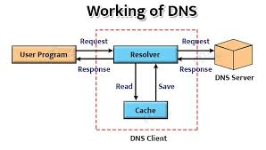

a web browser sends an HTTP request to a web server, which responds by sending the website's data (HTML, CSS, etc.) back in packets across the network (primarily TCP/IP) to be reassembled and displayed by the browser. This process involves a series of steps including DNS lookups to find the server's IP address, routing packets to the correct destination, and reassembling the data at the client end to form the web page.
Here's a breakdown of the process:Your web browser initiates the process by sending an HTTP request to the server where the website is hosted.
The browser first uses the Domain Name System (DNS) to find the specific IP address of the server hosting the website.
The request and subsequent data travel across the internet using the TCP/IP protocol suite. Data is broken down into small, manageable units called packets, each containing source and destination information, and are then reassembled at the destination.
Routers along the network direct these packets through various interconnected networks to reach the server's IP address.
The web server receives the HTTP request, finds the requested content (or generates it dynamically), and sends it back to your browser in a new set of packets.
Your browser receives these packets, reassembles them, and uses the HTML, CSS, and JavaScript to render and display the web page for you to see and interact with.
